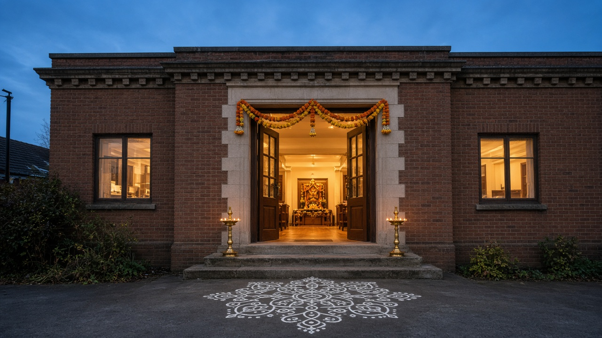

Saivite tradition · Watford
A home for Murugan in Watford.
The first temple consecrated in Watford. Daily worship, festivals, and a welcome for everyone.
Morning
10am – 2pm
Open every day
Evening
5pm – 9pm
Closed between 2pm and 5pm
Find us
453 St Albans Road
Watford, WD24 7RZ
Former Beechwood Family Centre
Our story
From a Friday gathering to Watford’s first consecrated temple.
It began with small weekly Friday services at a local community centre. As more families came, the temple moved into premises leased from Watford Borough Council, then in March 2019 to The Owls Bowls Club.
That lease is about to end. The trustees are looking for a lasting home so worship can continue.
Read the storyWorship
What happens here
Archana
Personal prayers offered in the Saivite tradition.
Regular pooja and sevas
Daily worship through the morning and evening openings.
Car pooja
Blessings for a vehicle, arranged with the temple.
Priest visits
External priest activities for homes and family occasions.
Festivals
Hindu festivals, holidays, and special occasions.
Hundi and donations
Give in person during opening hours, or online.
Take part
Three simple ways to be here
Visit
Come during opening hours. No booking needed for daily worship.
See timingsRegister
Leave your details so the temple can share festival and event news.
Register your interestGive
Support the appeal for a permanent home, online or in person.
See how to donate
Everyone is welcome. The temple follows Saivite traditions of pujas, agamas, and worship.
Hindu festivals, holidays, and special occasions are celebrated here.
Before you come
Quick answers
When is the temple open?
Every day, 10am to 2pm and 5pm to 9pm. It is closed between 2pm and 5pm.
Where is it?
453 St Albans Road, Watford, WD24 7RZ. The building was the Beechwood Family Centre.
How do I contact the temple?
Call 01923 229564 or +44 7590 908756, or email temple@watfordvelmurugan.org.
Can I donate online?
Yes. The live donate page is watfordvelmurugan.org/donate, and gifts also go through the temple’s Zeffy form.

Find us
453 St Albans Road
Watford, WD24 7RZ
Former Beechwood Family Centre. Open every day, 10am to 2pm and 5pm to 9pm.
Get directionsStay in touch
News from the temple
Give in person
The hundi is open during temple hours.
You can donate at the temple between 10am and 2pm, and again from 5pm to 9pm. For a bank transfer, the account is Watford Velmurugan Trust at HSBC, sort code 40-13-33, account 21480510.
All the ways to giveUntil 15 October
Help keep this temple standing.
£1.8 million+
The appeal is to buy a permanent home for future generations. Every gift counts.
Donate on Zeffy